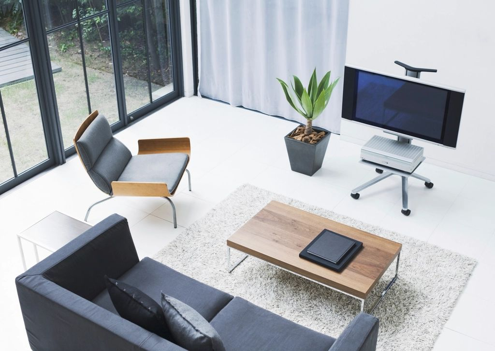
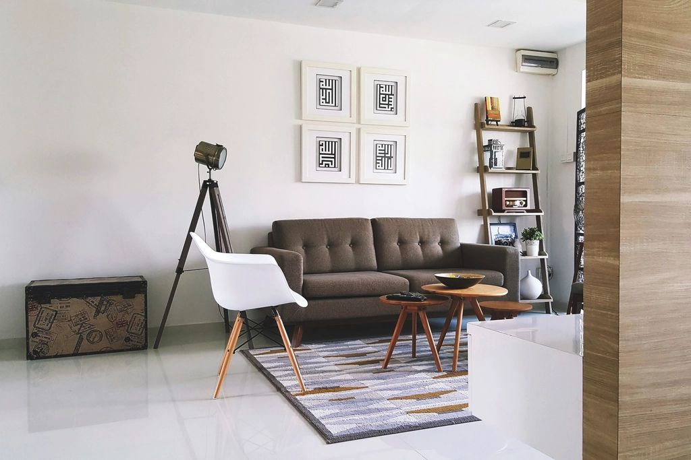
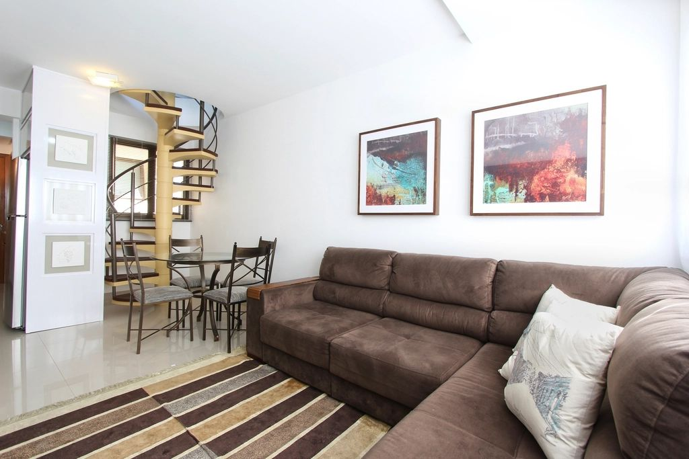

The living room is where guests are welcomed, festivals are celebrated and evenings are spent together. A modern living room in an Indian home has to look elegant while handling large gatherings, daily TV time and plenty of storage. These ideas balance both.
1. Start with a calm, neutral base
Warm whites, beige, greige and soft taupe make a room feel larger and brighter and let furniture and art stand out. Add colour through cushions, rugs and art, which are easy to change later.

2. Design a feature TV wall
Instead of a TV on a bare wall, design a feature wall with wooden fluting, textured panels, stone or a slim floating unit with concealed wiring. It becomes the room's focal point and hides cables and set-top boxes.
3. Layer the lighting
Combine soft cove lighting in the false ceiling, a statement chandelier or pendant, wall washers on the feature wall and a floor lamp beside the reading chair. Layered light makes the same room work for a party and a quiet evening.
4. Choose seating for real gatherings
An L-shaped sofa plus two accent chairs seats many people without crowding. Ottomans and poufs add flexible seating for festivals and tuck away the rest of the time.

5. Add hidden storage
Low cabinets under the TV, a sideboard and storage ottomans keep remotes, chargers, papers and board games out of sight. Clutter-free rooms always look more modern.
6. Bring in natural materials
Wood, cane, linen, stone and brass add warmth and keep a modern room from feeling cold. Cane and rattan are especially good in humid coastal cities like Vizag.
7. Use art and mirrors
A large artwork or a gallery wall adds personality, and a mirror opposite a window bounces daylight deeper into the room.

8. Define zones in open layouts
In open living-dining spaces, use a rug, a ceiling detail or a slim partition such as a jaali screen or fluted glass to separate the zones without closing them off.
9. Add greenery
Indoor plants like areca palms, snake plants and money plants soften modern lines, clean the air and suit Indian light well.
10. Plan with Vastu
Traditionally, heavier furniture sits along the south and west walls, while the north and east are kept lighter and more open. A pooja unit, if it's in the living room, works best in the north-east zone.
Want a living room like this? Manzil Homes designs and builds living rooms across Visakhapatnam, Hyderabad, Andhra Pradesh and Telangana, with 3D visuals before any work starts.